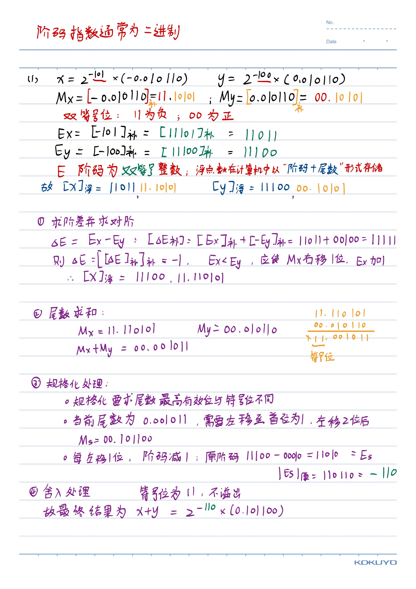

第2章：运算方法和运算器
核心考点 1：机器数的底层逻辑与转换（必考基础）
考试中，原、反、补、移码的转换以及表示范围是必考的选择/填空题，也是后面做大题的基础。
-
补码的本质（“模”的概念）：
-
在计算机中，机器字长是有限的（比如8位），因此运算是“有模的”。你可以把它想象成一个时钟，时针退3格（-3）和进9格（+9）在视觉上是同一个位置（模为12）。
-
重点公式： 定点整数的模是 \(2^{n+1}\)（对于字长n+1位）。如果 \(-2^n \le X \le 0\)，那么 \([X]_补 = 2^{n+1} + X\)。
-
神级技巧： 考试时求补码，如果是负数，最快的方法是保留原码的符号位，其余各位按位取反，最后末位加1。同样，已知补码求原码，也是“连同符号位不变，数值位取反加1”！例如 \([-X]_补\) 就是将 \([X]_补\) 连同符号位在内的全部位取反，末位加1。
-
-
移码（专属浮点数阶码）：
-
怎么求： 移码的数值部分与补码完全相同，只需把补码的符号位取反（1表示正，0表示负）。
-
为什么用移码： 如果把移码中所有的位都看作是无符号数，它的大小直接反映了实际数值的大小。这在浮点数比较阶码大小时（对阶）极其方便，硬件电路判断速度极快。
-
核心考点 2：IEEE 754 浮点数标准（100%必考计算大题）
这是全书最大的重点之一，通常会让你将一个十进制数转换为IEEE 754格式，或者反向推导。以最常考的 32位单精度浮点数 为例：
- 存储格式（32位）： 1位符号位(S) + 8位阶码(E) + 23位尾数(M)。
IEEE754 单精度浮点数（32位）：
- 符号位：1 位
- 阶码：8 位（偏置值 Bias = 127）
- 尾数：23 位
- 真值计算公式： \(X = (-1)^S \times (1.M) \times 2^{E-127}\)。
-
【考试实战演练】十进制 \(\rightarrow\) IEEE 754：
- 例题： 将十进制数 \(20.59375\) 转换为IEEE 754单精度格式。
- 第一步（化二进制）： 整数部分 \(20 = 10100_2\)，小数部分 \(0.59375 = 0.10011_2\)。合起来是 \(10100.10011_2\)。
- 第二步（规格化）： 将其写成科学计数法 \(1.010010011 \times 2^4\)。此时，尾数 \(M = 010010011...\)（注意隐藏了前面的1），真实的指数 \(e = 4\)。
- 第三步（求阶码E）： \(E = e + 127 = 4 + 127 = 131\)。转换为二进制是 \(10000011_2\)。
- 第四步（拼接）： 符号位 \(S=0\)（正数）。最终机器码为
0 10000011 01001001100000000000000，即十六进制的41A4C000H。
-
【常考极端值】陷阱点：
- 最小的规格化正数： 阶码E为1（真实指数1-127=-126），尾数全为0，值为 \(1.0 \times 2^{-126}\)。
- 最大的规格化正数： 阶码E为254（真实指数254-127=+127），尾数全为1，值为 \(+(2 - 2^{-23}) \times 2^{+127}\)。
- 非规格化数 阶码全 0：E=0 说明这是非规格化数（denormalized）。 非规格化数公式： $$ x=(−1)^S \times(0.M)\times 2^{-126} $$ 注意： 规格化数：隐藏位是 1 非规格化数：隐藏位是 0
核心考点 3：定点数加减运算与“溢出检测”（必考判断/计算）
依靠补码，减法被完美转换成了加法：\([X+Y]_补 = [X]_补 + [Y]_补\)。但随之而来的是考卷上必出的溢出检测问题。
- 什么是溢出？ 两个正数相加得到负数，或者两个负数相加得到正数，这就是溢出了（一正一负相加绝不可能溢出）。
-
【考试重点】两种溢出检测方法：
- 单符号位法： 公式是 \(V = C_{n-1} \oplus C_f\)。其中 \(C_{n-1}\) 是最高数值位向符号位的进位，\(C_f\) 是符号位向前的进位。如果这两个进位不一致（异或结果为1），则说明溢出。
-
双符号位法（变形补码 - 超高频考点）： 运算时使用两个符号位 \(S_{f1}S_{f2}\)（正数符号设为00，负数为11）。结果判断如下：
00：结果为正，无溢出。11：结果为负，无溢出。01：上溢（结果本应为正，却算出了负）。10：下溢（结果本应为负，却算出了正）。- 溢出逻辑表达式：\(V = S_{f1} \oplus S_{f2}\)。
核心考点 4：乘除法运算（注意学校具体要求）
这部分在某些学校属于难点但非必考点，如果考的话，主要抓以下规律：
- 阵列乘法器： 如果被乘数和乘数都是负数补码，硬件在计算前，会先去掉符号位，将其余各位求反加1（即自动转化为原码的绝对值部分）参与相乘，最后通过算后求补器加上正确的符号。
- 不恢复余数除法： 注意它的核心判定规则：如果余数为负，商0，下一步除数右移并执行加法；如果余数为正，商1，下一步除数右移并执行减法。
核心考点 5：奇偶校验码（常考选择题）
-
判断准则： 无论是奇校验还是偶校验，关键看 “数据位 + 校验位” 整体里面
1的个数。- 偶校验： 整体中
1的个数必须是偶数个。例如，数据1010101中有4个1，要满足偶校验，附加的校验码就必须是0。 - 奇校验： 整体中
1的个数必须是奇数个。
- 偶校验： 整体中
核心考点 6：运算器结构（概念理解）
- 多总线结构： 了解现代CPU如何传输数据。例如在三总线结构中，执行加法指令
ADD R0, R1只需两步：第一步，R0和R1的数据分别通过总线1和总线2同时打入ALU（算术逻辑单元）；第二步，ALU运算结果通过总线3写回R0。这种并行结构大大提高了运算速度。
💡 给你的复习策略建议： 考试前，请务必找张草稿纸，独立手算一遍 IEEE 754 单精度浮点数的双向转换（十进制转二进制、十六进制机器码转十进制真值），并且手写一遍双符号位法（变形补码）的溢出判断。
Tip
额，我觉得这种补码运算，以及二进制的乘除法都非常简单
把ppt上的题目弄会了，理解计算机如何进行二进制运算就行了，以及IEEE754浮点数，把二进制理解了，一点都不难，
我就不把ppt里题目拿出来分析了，其实这部分知识密度很小，但是不知道周老师为什么要拿三个ppt讲。
大部分题目我就不单拎出来说了，ppt和作业后面的题目都比较简单，然后我会对于作业解析不太详细的做一些补充，可以说是狗续貂尾了
教材题目P69-9
前提约定（变量定义）
设两个浮点数 \(x\) 和 \(y\) 的规格化表示分别为：
- \(M_x\)、\(M_y\)：尾数（Mantissa），通常为纯小数，常见形式为 \(0.1\cdots\)（二进制），即绝对值小于 1 且首位为 1（规格化后）。
- \(E_x\)、\(E_y\)：阶码（Exponent），整数，用补码或移码表示。
- 浮点数在计算机中通常以“阶码 + 尾数”形式存储，并且经常采用双符号位（如 \(00\) 表示正，\(11\) 表示负）进行中间运算，以便判断溢出。
在下面的流程中，我们假设：
- 阶码用双符号位补码表示（如 \(11\,100\) 表示真值 \(-4\)）。
- 尾数用双符号位补码表示（如 \(00.101100\) 表示 \(+0.101100\)，\(11.010100\) 表示 \(-0.101100\)）。
标准流程（5 步）
1️⃣ 对阶
- 目的：使 \(E_x = E_y\)，从而尾数可以直接相加。
-
变量：
-
\(\Delta E = E_x - E_y\) （阶差）
-
计算机中通过补码加法计算：\([\Delta E]_{\text{补}} = [E_x]_{\text{补}} + [-E_y]_{\text{补}}\)。
-
操作：
-
若 \(\Delta E = 0\)，已对齐。
- 若 \(\Delta E > 0\)，说明 \(E_x > E_y\)，则将 \(y\) 的尾数右移 \(\Delta E\) 位，同时 \(E_y\) 加 \(\Delta E\)。
-
若 \(\Delta E < 0\)，说明 \(E_x < E_y\)，则将 \(x\) 的尾数右移 \(|\Delta E|\) 位，同时 \(E_x\) 加 \(|\Delta E|\)。
-
右移规则：尾数右移时高位补符号位（算术右移）。低位移出的位一般保留在“保护位”中，用于后续舍入。
2️⃣ 尾数求和
- 目的：将对阶后的尾数相加（用补码加法）。
- 变量：
- \(M_x'\)、\(M_y'\)：对阶后的尾数（已经具有相同的指数）。
- \(M_s = M_x' + M_y'\) （和尾数）
- 注意：使用双符号位加法，结果可能产生：
- \(00.\cdots\) 正数
- \(11.\cdots\) 负数
- \(01.\cdots\) 正溢出（尾数大于等于 2）
- \(10.\cdots\) 负溢出（尾数小于等于 -2）
3️⃣ 规格化处理
- 目的：将和尾数 \(M_s\) 调整成规格化形式（例如 \(|M_s| \in [0.5, 1)\)，即最高数值位与符号位不同）。
- 变量：
- \(M_s\) 当前和尾数，\(E_s\) 当前阶码（取对阶后的阶码，例如 \(E_x'\) 或 \(E_y'\)）。
- 操作：
- 左规：如果 \(M_s\) 的双符号位相同但数值部分的前导位不是 1（即形式为 \(00.0\cdots\) 或 \(11.1\cdots\)），则尾数左移 1 位，阶码减 1，直至规格化（或出现溢出）。
- 右规：如果尾数双符号位不同（\(01.\cdots\) 或 \(10.\cdots\)），说明绝对值 ≥ 2，此时尾数右移 1 位，阶码加 1，并修正尾数的符号位（右移后高位补 0 或 1 取决于符号，但通常采用算术右移）。
4️⃣ 舍入处理
- 目的：在右移（对阶或右规）过程中，低位可能被移出，需要按规则决定是否进位到保留的尾数中。
- 常用规则：
- 0 舍 1 入（类似十进制四舍五入）：若被移出的最高位是 1，则尾数末位加 1。
- 恒舍法（截断）：直接丢弃移出位。
- 注意：舍入可能导致尾数再次溢出，此时需要再执行一次右规。
5️⃣ 溢出判断
- 目的：最终结果的阶码是否超出了机器可表示的范围。
- 变量：
- 最终阶码 \(E_{\text{final}}\) 的双符号位。
- 判据：
- 若双符号位为 \(00\) 或 \(11\)，无溢出。
- 若为 \(01\)，表示上溢（正指数太大，结果 → \(+\infty\)）。
- 若为 \(10\)，表示下溢（负指数太小，结果 → 0 或下溢异常）。
小结：变量一览表
| 符号 | 含义 | 示例（双符号位补码） |
|---|---|---|
| \(E_x\) | \(x\) 的阶码真值 | \(-5\) |
| \([E_x]_{\text{补}}\) | 阶码的机器表示 | \(11\,011\)（真值 -5） |
| \(M_x\) | \(x\) 的尾数真值 | \(-0.010110\) |
| \([M_x]_{\text{补}}\) | 尾数的机器表示 | \(11.101010\) |
| \(\Delta E\) | 阶差 \(E_x - E_y\) | \(-1\) |
| \(M_x'\)、\(M_y'\) | 对阶后的尾数 | 例中对阶后 \(M_x' = 11.110101\) |
| \(M_s\) | 尾数之和（可能未规格化） | \(00.001011\) |
| \(E_s\) | 和结果当前的阶码 | 对阶后的阶码 \(11\,100\) |
| 规格化后 \(M_s'\)、\(E_s'\) | 经过左规或右规后的尾数和阶码 | \(M_s'=00.101100\)，\(E_s'=11\,010\) |
| 最终结果 | \(x + y = M_{\text{final}} \times 2^{E_{\text{final}}}\) | \(2^{-110} \times 0.101100\) |
\({\Large (1) x = 2^{-101} \times (-0.010110),\quad y = 2^{-100} \times 0.010110,\quad \text{求 } [x+y]}\)
我自己手写的

\({\Large (1) x = 2^{-101} \times (-0.010110),\quad y = 2^{-100} \times 0.010110,\quad \text{求 } [x-y]}\)
略，这道题ppt上没问题